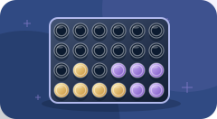

THE LATEST FROM BEEBO
A clearer Beebo. More ways to play.
A more organised desktop, clearer connection information on your phone, and new game artwork with dice that roll right on the board.
Get the latest apps
Update the Windows program and your Android app. Install the Android update over your existing Beebo website app to keep its settings. Reopen Beebo after updating.
Windows installer · 165.0 MB · Released Sep 20, 2026, 4:20:14 AM Eastern
Android APK · 28.6 MB · Released Sep 20, 2026, 4:14:23 AM Eastern
Know how your phone is connected
The Android connection banner now follows the active connection when its route changes. It identifies Beebo Relay or Cloudflare Relay when that provider can be confirmed. While checking, it says so instead of assuming a direct connection.
A friend’s Wi-Fi or a cellular connection can still connect directly to your home over the internet. The banner reports the actual connection route, not just which network your phone has joined.
Beebo Relay’s encrypted port 443 connection has also been repaired on our server. An enabled relay and a completed away-from-home phone test are now described separately in desktop setup.
A desktop that is easier to find your way around
- Get Started: setup panels sit side by side on wider screens and stack on smaller windows.
- Phone Backups: a clearer label for your backed-up phone photos and videos.
- Video Playlists: makes it clear these collections contain movies and TV episodes.
- Upload history: remove one entry or clear the displayed history without deleting the video files.
- Log out: a dedicated button beneath the version and update information.
- Away access: enable it for all approved users and choose a default for new users. Pending and revoked accounts still need approval; individual restrictions are respected.
Dice that roll on the board
In Ludo, Snakes and Ladders, and Five Dice, three-dimensional dice tumble over the board or dice tray, then settle on the host’s result. Guests see the same result on their own phones.
- In Five Dice, tap a die to keep it. Kept dice stay still while the others roll.
- Rolls stay close to the board as you scroll, and reduced-motion settings skip the tumbling.
- A failed connection does not display an invented result. You can retry the action.
A fresh look across your games



- New illustrations for 38 shared games and four solo games.
- Detailed chess pieces, wooden boards, glossy counters, ivory dominoes and a matching card deck.
- 4-in-a-row counters drop into place. Cards and dominoes lift when selected.
- Refreshed Solitaire, Five Letters, Sudoku and Minesweeper graphics.
Play with friends on their own phones
- Update Beebo on the host phone.
- Open Other → Games → Play with guests and start your campsite session.
- Guests join the same hotspot or local Wi-Fi, scan the guest QR code and enter their names.
- Everyone opens Games, chooses the same game, and the leader starts the round.
After updating, restart Campsite Mode and have guests reload their game page. The artwork is included in the app, so guests do not need an internet connection to fetch it.
Your other Beebo features
Looking for Story Mode and character voices, computer voice setup, or the illustrated app tour? The guides are still here.
For Watch Together, open Other → Tools → Watch Together, or start a video and use the Watch together button in the player.
Downloads are now served from Beebo’s OVH server. Only the current supported installers are linked here.